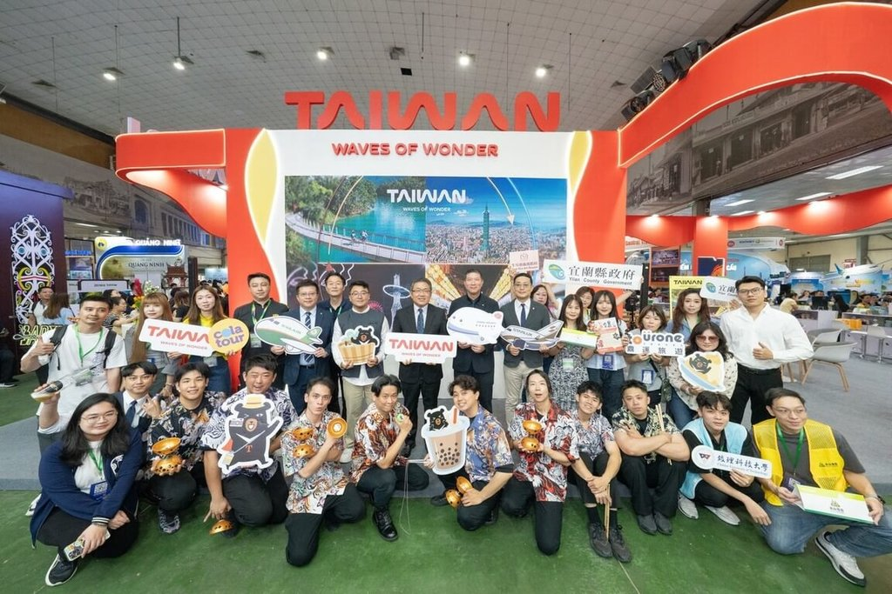
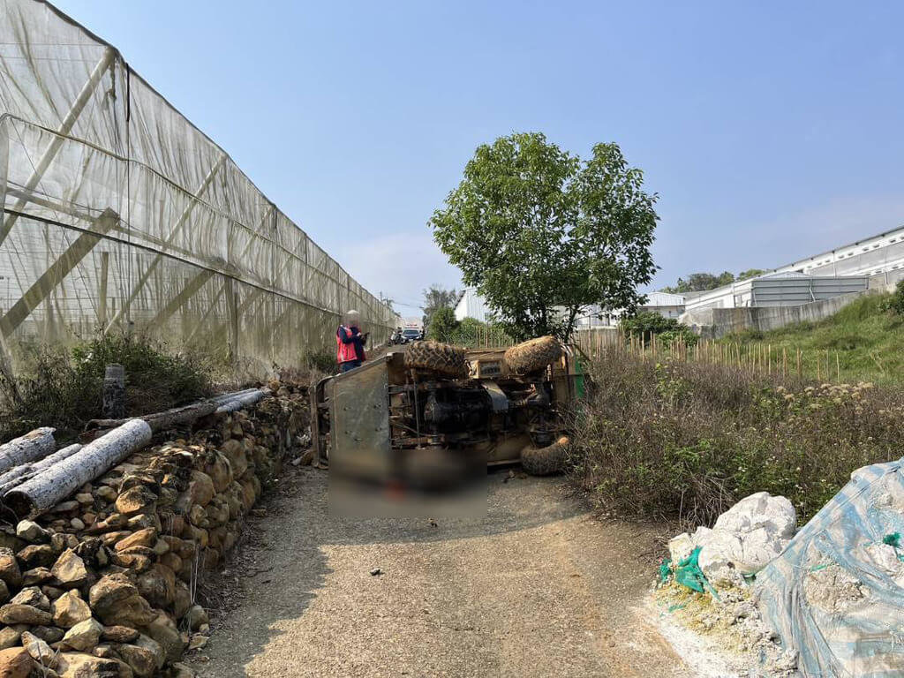
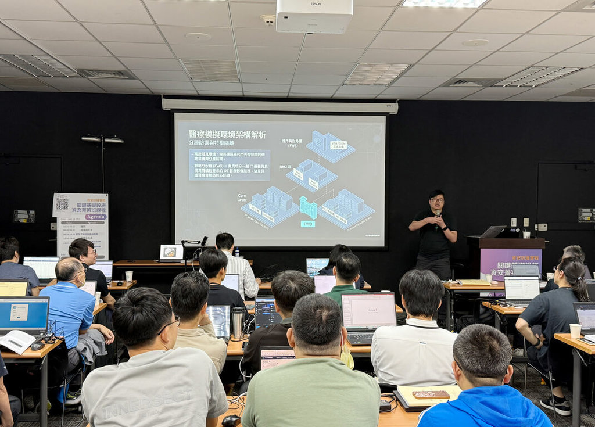

越南偶像嗨翻河內旅展台灣館 民眾推台灣值得再訪
Thần tượng Việt Nam khuấy động gian hàng Đài Loan tại Hội chợ Du lịch Hà Nội. Người dân khẳng định Đài Loan đáng để ghé thăm lần nữa. Hội chợ Du lịch Quốc tế Hà Nội lần thứ 15 diễn ra từ ngày 9 đến 12 tháng 4, gian hàng Đài Loan do Cục Du lịch Đài Loan dẫn đầu với 17 đơn vị, tổng cộng 41 người tham gia. Trong thời gian triển lãm, đã có hơn 2.000 buổi gặp gỡ giao dịch du lịch B2B được tổ chức. Các hoạt động tại gian hàng Đài Loan bao gồm biểu diễn nhào lộn của Đoàn kịch Hổ (Tiger Troupe), biểu diễn của nhà vô địch pha chế rượu, tự tay làm tò he (một loại hình nghệ thuật dân gian của Đài Loan), thu hút đông đảo khách tham quan. Thần tượng Việt Nam ISAAC, với vai trò đại sứ du lịch Đài Loan, đã xuất hiện và giao lưu với người hâm mộ, quảng bá du lịch Đài Loan. Cục Du lịch Đài Loan hy vọng thông qua sự kiện này sẽ truyền tải thông điệp về một Đài Loan sôi động 24/24, đồng thời tích cực khai thác thị trường du lịch tự túc của giới trẻ Việt Nam, tăng cường giới thiệu các điểm đến như Cao Hùng, Đài Nam thông qua hoạt động quảng bá của người nổi tiếng. Một số công ty lữ hành Việt Nam bày tỏ sự yêu thích đối với Đài Loan, hàng tháng đều tổ chức tour du lịch đến Đài Loan và mong muốn phát triển thêm các điểm đến mới. Khách du lịch Việt Nam từng đến Đài Loan cho biết thủ tục đến Đài Loan đơn giản, người dân thân thiện, đồ ăn ngon và dự định sẽ đến thăm Đài Loan lần nữa.
閱讀全文

